Modelos NA, OV, T

Resistencias blindadas en tubo de Cobre niquelado ó Acero inoxidable, con tapón roscado de acoplamiento. Monofásicas, trifásicas. Caperuza protección IP-40.
Resistencias blindadas en tubo de Cobre niquelado ó Acero inoxidable, con tapón roscado de acoplamiento. Monofásicas, trifásicas. Caperuza protección IP-40.
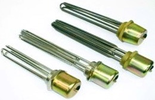
Resistencias blindadas en tubo de Cobre niquelado ó Acero inoxidable, con tapón roscado de acoplamiento. Trifásicas, caperuza protección IP-40, varias potencias y medidas.
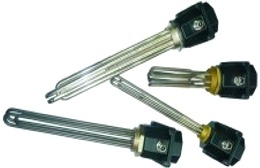
Resistencias blindadas con tapón roscado de acoplamiento. Trifásicas, caja conexiones estanca IP-66, vaina para termostato, en cobre niquelado o Inoxidable.
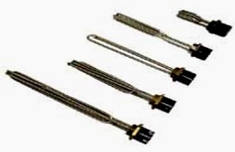
Grupo monobloc de resistencia monofásica con vaina para termostato y tapón de acoplamiento de latón 1" ¼ Gas, en tubo de Cobre niquelado ó Acero inoxidable.
Modelos NOB Para agua, aceite térmico alta calidad o aceite. Varias potencias y medidas.
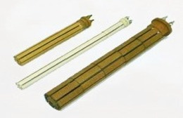
Las resistencias de candela trabajan insertadas en el interior de una vaina que a su vez está en contacto con el líquido a calentar. Se fabrica tanto para uso doméstico como para uso industrial. Varias potencias y medidas.
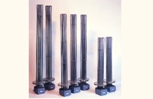
Los grupos calefactores GCB son equipos de calentamiento preparados para trabajar sometidos a presión. Su construcción, está basada en la soldadura de varios elementos calefactores blindados a una brida ciega normalizada, con su correspondiente caja de conexiones.
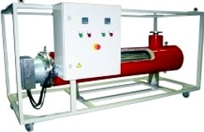
Los calentadores de paso GCP consisten en un grupo calefactor GCB montado sobre un cuerpo tubular de acero o acero inoxidable, de brida adecuada, fondo y tubuladuras de entrada, salida y purga, roscadas o embridadas.
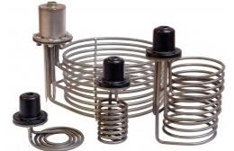
Resistencias de inmersión para fondo de tanque construidas en tubo de acero inox y con cabezal de conexiones con grado de protección contra la humedad IP67 en acero colado con una rosca de 1/2" gas hembra para acoplar un tubo pasante.
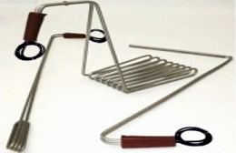
Resistencias de inmersión tipo sumergidor con un mango para asir la resistencia y poder manejarla fácilmente. Tubo blindado acero inoxidable. Se suministra con un cable de alimentación de 1500mm de longitud.
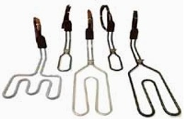
Resistencias de inmersión "over side" para ácidos y bases en general. Con un mango de resina epoxi que lo hace estanco a la penetración de líquidos, grado de protección contra la humedad IP-67.
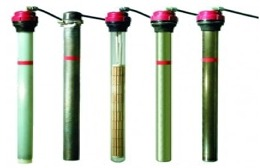
Calentadores especiales que se emplean sobre todo en galvanotecnia para líquidos corrosivos. Permiten calentar todo tipo de baños galvánicos: alcalinos, desengrasantes, salinos, ácidos y cualquier disolución química.
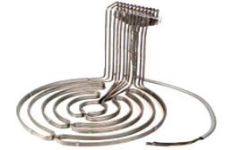
Calentador de inmersión trifásico con base circular adecuada para grandes tanques o recipientes de cocción, sales, etc. Se suministra con caja de conexiones con un grado de protección contra la humedad IP54 y cable de alimentación de 3000mm de longitud.

Los calentadores de inmersión EPV han sido diseñados para calentar líquidos y, en enotecnia, para facilitar el proceso de fermentación del mosto. Íntegramente fabricados en acero inoxidable AISI 316L y completamente estancos para su inmersión total en los depósitos de fermentación.
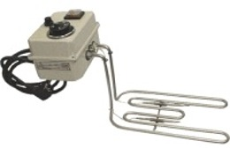
Resistencias de calentamiento tipo sumergidor con caja de conexiones IP44 que incorpora un termostato de regulación de temperatura de rearme automático y un limitador de seguridad de rearme manual. Gama para aguay para aceite.